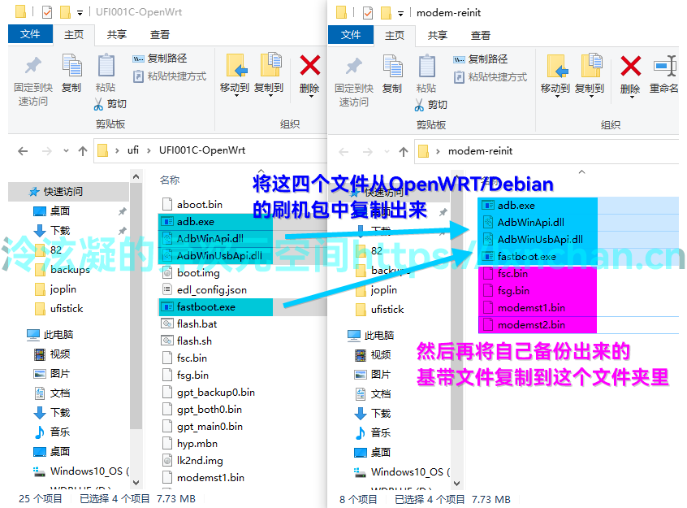

debian教程
1.刷入debian
苏苏小亮亮包
打开文件所在目录 在地址栏输入 cmd 后 输入 flash.bat
2022-06-08 点击下载
Note
该版本默认是随身WIFI模式，开机后自动开启热点，名称：4G_UFI_123456，密码：12345678，并且会开机USB网络共享
该版本可在随身WIFI和遥控车模式间切换，SSH登录到Debian系统，执行./ufi.sh,根据提示可切换模式和修改热点密码
2.手动更新驱动
Tip
刷完Debian后开机，设备管理器里会显示一个ADB设备，但是这样连不上SSH，所以需要手动修改，使它能够识别到棒子的USB网络共享
打开设备管理器，右键识别到的ADB设备，依次右键点击 > 更新驱动 > 浏览我的电脑... >; 让我从计算机上... > 取消勾选显示兼容硬件，接着可以跟我一样选择左边的Microsoft，再选择右边的这个USB移动宽带...，再点击下一步后根据提示确认


操作完后重新拔插棒子，等待棒子开机，观察设备管理器是否出现一个未知设备。出现了之后依次右键点击 > 更新驱动 > 浏览我的电脑... > 让我从计算机上... > 网络适配器 > 下一步 > 左边选择Microsoft >; 右边选择基于远程NDS的...，接着点击下一步根据提示确认


最后手动更新驱动后设备管理器会出现它，这样才能进行下一步的SSH登录操作

3.ssh连接
用户名root
密码1
安装完debian后 设备管理器里出现未知设备
若没有出现未知设备 将驱动更新为 Composite USB Device 即可
右键未知设备 更新驱动 选择 浏览我的计算机以查找驱动程序软件 让我从计算机上的可用驱动列表中选取 microsoft 基于远程rndis设备的usb共享
{kind=link}
4.debian连接wifi
使用命令 nmtui
网桥里删除wifi 否则不显示附近的wifi
5.换源
进入etc/apt/souces.list 添加下面清华源
# 默认注释了源码镜像以提高 apt update 速度，如有需要可自行取消注释
deb https://mirrors.tuna.tsinghua.edu.cn/debian/ bullseye main contrib non-free
# deb-src https://mirrors.tuna.tsinghua.edu.cn/debian/ bullseye main contrib non-free
deb https://mirrors.tuna.tsinghua.edu.cn/debian/ bullseye-updates main contrib non-free
# deb-src https://mirrors.tuna.tsinghua.edu.cn/debian/ bullseye-updates main contrib non-free
deb https://mirrors.tuna.tsinghua.edu.cn/debian/ bullseye-backports main contrib non-free
# deb-src https://mirrors.tuna.tsinghua.edu.cn/debian/ bullseye-backports main contrib non-free
deb https://mirrors.tuna.tsinghua.edu.cn/debian-security bullseye-security main contrib non-free
# deb-src https://mirrors.tuna.tsinghua.edu.cn/debian-security bullseye-security main contrib non-free
进入/etc/apt/sources.list.d/mobian.list
注释掉
#deb http://repo.mobian-project.org/ bullseye main non-free
进入/etc/apt/sources.list.d/AdoptOpenJDK.list
将AdoptOpenJDK改为Adoptium
deb http://mirrors.tuna.tsinghua.edu.cn/Adoptium/deb buster main
由于没有公钥，无法验证下列签名： NO_PUBKEY 843C48A565F8F04B
解决方法，添加个密钥就行 apt-key adv --keyserver hkp://keyserver.ubuntu.com:80 --recv 843C48A565F8F04B
更新 apt-get update && apt-get upgrade -y
6.安装docker
Docker安装很简单，一键脚本安装就行
apt-get install curl -y 安装curl
curl -sSL https://get.daocloud.io/docker | sh
7.python环境修复
python3 --version
1、更新源：
sudo apt-get update
2、先卸载：
sudo apt-get --purge remove python3
3、然后我又把没用的依赖全都卸载了：
sudo apt-get autoremove
4、再重新安装：
sudo apt install python3 python3-pip python-is-python2
5、到这里应该就正常了，可以重新验证下
Tip
【总结】一键执行以下命令即可
echo -e '\n\n\n\n\n\n\n\n\n\n####################################\n\n安装时间较长，请耐心等候！'
echo -e '\n即将开始安装......\n\n'
sleep 5
sudo apt-get update
sudo apt-get --purge -y remove python3 python3-pip python-is-python2
sudo apt-get autoremove -y
sudo apt install -y python3 python3-pip python-is-python2
echo -e '\n\n####################################\n'
echo -e '尝试获取当前系统安装的python版本号......\n'
python3 --version
echo -e '\n\n\n恭喜你，python环境重新安装完成！'
echo -e '\n####################################\n\n\n'
提取基带
首先在Android系统下（不要在已经刷好的OpenWrt下直接提取基带，那样提取了也没用）插入你的SIM卡，（可能需要切换到SIM卡1）确认能够上网之后断电取下SIM卡再上电备份。如果Android系统下就无法上网则备份出来也是没有用的，建议先刷一遍全量救砖包（MiKo备份的出厂包）或换一个运营商的SIM卡甚至退货处理。
确认基带可用后，将棒子进入9008模式联机，打开Qualcomm Premium Tool，按照下图操作将modemst1、modemst1、fsc、fsg四个分区单独备份到一个文件夹中，一次只能备份一个，需要循环上述备份操作直至四个分区全部备份完成。
{kind=link}
此时进入备份文件夹，找到这四个文件，将后缀名全都改为.bin，然后全部拖进之前准备好的OpenWRT文件夹或Debian文件夹中替换掉原来的文件即可。
{kind=link}
刷入基带
如果 OpenWRT 开机后显示“正在拆卸调制解调器载体”或“网络设备不存在”则再执行此步操作。在Debian或OpenWRT下重刷基带不是必须的，本节只是类似问题的备用解决方案。
将前面提取的基带文件（4个，分别是modemst1.bin、modemst1.bin、fsc.bin和fsg.bin）与OpenWRT/Debian刷机包文件夹下的复制到一个新的文件夹内，然后在该文件夹空白处按住Shift+右键，选择“在此处打开PowerShell窗口”或“在此处打开命令提示符”。
 然后将棒子重启至Fastboot连接至电脑，在命令提示符或PowerShell中依次输入如下命令即可：
{kind=link}
fastboot flash fsc fsc.bin
fastboot flash fsg fsg.bin
fastboot flash modemst1 modemst1.bin
fastboot flash modemst2 modemst2.bin
fastboot reboot
先机使用这个
fastboot flash modem NON-HLOS.bin
fastboot flash fsc fsc.mbn
fastboot flash modemst1 modem_st1.mbn
fastboot flash modemst2 modem_st2.mbn
fastboot reboot